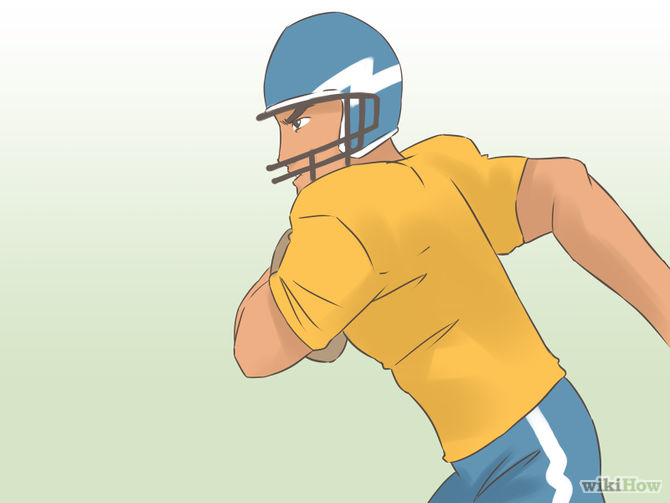
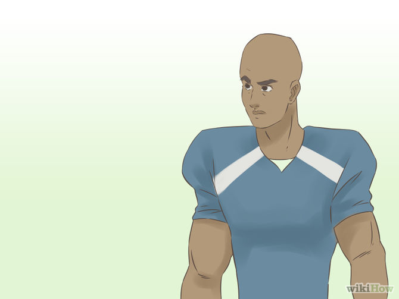

How to Draft Your Fantasy Football Team
Drafting a fantasy football team doesn't have to be hard! Here are some steps/tips on how to prevent yourself from drafting a losing team.
Steps
- Start your research early. There are a number of good online resources to study, and starting your research early can save you the trouble of getting sucked in by the preseason hype that often explodes around unproven players in the days leading up to most fantasy drafts.

- Consult mock drafts. There are people that get paid to do 'mock drafts', and they generally do their homework. You don't have to draft exactly what they do, but it gives you a starting point. There a lots of free 'cheat sheets' available online.

- Keep a close eye on the IR. Don't lock anything in until right before your draft begins. Look at the players you hope to draft, track how they perform in the preseason and keep abreast of their practice schedule as it can often indicate a lingering injury that would severely threaten their fantasy value.

- Know your league. Different Fantasy Football leagues score in different ways. The specifics of how your league scores might make WRs or TEs more valuable and these differences will not be reflected on mock-draft charts or power rankings.
- Draft using the points system. Generally, RBs are the position that will give you the most points. Start with those and work your way down the list. Some people draft RBs with their first 3-5 rounds. This is really not needed unless no one else is drafting RBs. Do the first round, perhaps the secondary, and only the third if some stud just falls in your lap.
- A quick guide to what order positions should drafted in is "RB, WR, QB, Def, TE, and K". This can be changed a bit depending on what is on the draft board.
- Depending on the league, you usually get nine starters and about five backup players. So an actual draft order could look like this: RB, RB, WR, WR, QB, WR, RB, WR, TE, DEF, QB, WR, TE, K.

- Never take a kicker before round 9, and probably not before the last 2 rounds. No kicker will be more beneficial than a backup position.

- Pay attention to BYE weeks. Who wants to draft a backup RB/WR that has the same BYE week as your starters, or 2 starters with the same BYE week?
- Don't draft all of your favorite players from your favorite team. Try to limit it to two players per team. Covering your BYE weeks can be a real pain with three of them on the same team.

- Don't forget about 'handcuff players'. Players that would take over in the event of your super stud getting injured. Someone will take them the second an injury is reported.
Video